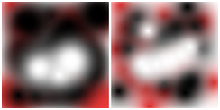

Templates are pre-defined image settings that you can use to quickly create a new image with your preferred dimensions, resolution etc. GIMP comes with a lot of templates installed, but you can also create your own. When you create a new image, you can access the list of existing templates to choose one to be used as base for your new image. The “Templates” dialog allows you to manage these templates.
This dialog is a dockable dialog; see the section Section 2.3, “Dialogs and Docking” for help on manipulating it.
You can access it:
-
from the main menu: → → .
-
from the Tab menu in any dockable dialog by clicking the tab menu button
 and selecting
→ .
and selecting
→ .
You select a template by clicking on its icon. Right clicking reveals a local menu that offers the same functions as the buttons.
In the Tab menu for the “Templates” dialog, you can choose between and . In Grid mode, templates are laid out in a rectangular array of identical icons (unless you gave them a particular icon, as we will see later). Only the name of the selected template is displayed. In List mode, they are lined up vertically; icons are identical too; all names are displayed.
In this Tab menu, the Preview Size option allows you to change the size of thumbnails.
![[Tip]](images/tip.png)
|
Tip |
|---|---|
|
Ctrl+F in a list view opens a search field. See View as List |
The button bar at the bottom offers the following functionality:
-
 Create a new image from the selected template
Create a new image from the selected template
-
Clicking on this button creates a new image with the settings defined in the selected template.
-
 Create a new template
Create a new template
-
Clicking on this button opens the New template dialog, identical to the Edit Template dialog, that we will see below.
-
 Duplicate the selected template
Duplicate the selected template
-
Clicking on this button opens the Edit Template dialog that is documented next.
-
 Edit the selected template
Edit the selected template
-
Clicking on this button opens the Edit Template dialog where you can adjust the image related settings for the selected template.
-
 Delete the selected template
Delete the selected template
-
This deletes the selected template after asking for confirmation.
Tip Every template is stored in a
templatercfile in your personal GIMP directory. If you want to restore some deleted templates, you can copy or append template entries to your file from the mastertemplatercfile in theetc/gimp/3.0directory of GIMP's system folder.

This dialog allows you to change the settings of the selected template.
You can access this dialog by clicking on the button at the bottom of the Templates Dialog
Options
- Name
-
In this text box, you can modify the name of the template.
- Icon
-
By clicking on this icon, you can select a different icon that will be shown in front of the name of this template. The icon can be picked from a list of pre-defined icons, from a file on your computer, or by pasting from the clipboard.
- Image size
-
Here you set the Width and Height of the new image. The default units are pixels, but you can choose a different unit if you prefer, using the adjoining menu. If you do, note that the resulting pixel size is determined by the X and Y resolution (which you can change in the Advanced Options), and by setting “Dot for Dot” in the menu.
- Portrait/Landscape buttons
-
These buttons toggle between Portrait and Landscape mode. Their effect is to exchange the values for Width and Height. If the X and Y resolutions are different (in Advanced Options), then these values are also exchanged. On the right, image size, image resolution and color space are displayed.
Advanced Options
The advanced options let you change several additional image settings.
- X and Y resolution
-
The values in the X resolution and Y resolution fields relate mainly to printing: they do not affect the size of the image in pixels, but they may determine its physical size when it is printed. The X and Y resolution values can determine how pixels are translated into other measurement units, such as millimeters or inches.
Tip If you want to display the image on the screen at the correct dimensions, select → Set the zoom factor to 100% to see the image at its true screen size. The calibration of the screen size is normally done when GIMP is installed, but if the image does not display at the correct size, you may have to adjust the screen parameters in GIMP. You can do this in the Preferences dialog.
- Color space
-
You can create the new image in different color modes, as either an RGB image or a grayscale image.
- RGB color
-
The image is created in the Red, Green, Blue color system, which is the one used by your monitor or your television screen.
- Grayscale
-
The image is created in black and white, with various shades of gray. Aside from your artistic interests, this type of image may be necessary for some plug-ins. Nevertheless, GIMP allows you to change an RGB image into grayscale, if you would like.
You cannot create an indexed image directly with this menu, but of course you can always convert the image to indexed mode after it has been created. To do that, use the → → command.
- Precision
-
This setting lets you define the encoding used to store pixel information. For more details, please see the Image Encoding section.
Five options are available:
-
8-bit integer
-
16-bit integer
-
32-bit integer
-
16-bit floating point
-
32-bit floating point
If you wonder what the difference is between integer and floating point (in the graphics area): If you have an image with 16-bit integer precision per channel, then you have 65,536 shades of different red, green and blue color tones – all of them equally stepped to each other (equal color distance). If you have it in floating point, then there are no equal-wide steps – so you can distribute the possible color values over selected ranges. For example: if you know that you have a very dark image with many shades of dark red color tones then you would benefit from floating point because you can decrease the importance of the brighter color tones and get most color detail out of only the darker reds.
Figure 15.54. Precision example

Left image is 8-bit, right is 32-bit. You can see that there are much more available colors between color transitions on the right image.
-
- Gamma
-
Here you can choose the channel encoding for your image. Choices are Non-linear and Linear light. For 8-bit integer precision the default is Non-linear, and for 32-bit floating point precision it is Linear light. For more information see which precision options should you choose.
- Color profile
-
Here you can choose a color profile to be used for your image. The default is GIMP's standard color profile based on Color space, Precision, and Gamma. If you prefer to use a different color profile you can select an ICC color profile file from a location on your computer by choosing Select color profile from disk….
- Soft-proofing color profile
-
You can attach a CMYK color profile to the image with this option. This profile will be used to create a soft-proofed display of the image when the Proof Colors option is enabled in the View menu. As with the Color Profile, if you prefer to use a different color profile you can select an ICC color profile file from a location on your computer by choosing Select color profile from disk….
- Soft-proofing rendering intent
-
This option lets you select the rendering intent that will be used to convert the colors from the soft-proofed image to your display device when → → is enabled. The four intents are “Perceptual”, “Relative colorimetric”, “Saturation” and “Absolute colorimetric”. See Section 6.4, “Color Management” and Section 6.8, ““Color Management” Submenu” for more information.
- Use Black Point Compensation
-
When enabled, the BPC algorithm attempts to adjust the display of darker areas in the image when the Proof Colors option is enabled in the View menu.
- Fill with
-
Here, you specify the background color that is used for your new image. It is certainly possible to change the background of an image later, too. You can find more information about doing that in the Layers Dialog.
There are several choices:
-
Fill the image with the current Foreground color, shown in the Toolbox.
Note that you can change the foreground color while the “New Image” dialog window is open.
-
Fill the image with the current Background color, shown in the Toolbox. (You can change the background color too, while the dialog window is open.)
-
Fill the image with Middle Gray (CIELAB). This will create a layer with a gray color that is 50% of perceptual lightness in the selected color mode.
-
Fill the image with White.
-
Fill the image with Transparency. If you choose this option, the image is created with an alpha channel and the background is transparent. The transparent parts of the image are then displayed with a checkered pattern, to indicate the transparency.
-
Fill the image with a Pattern. If you choose this option, the image is filled with the currently active pattern (which you can change while this dialog is open).
-
- Comment
-
You can write a descriptive comment here. The text is attached to the image as a parasite, and is saved with the image by some file formats (PNG, JPEG, GIF).
![[Note]](images/note.png)
Note You can view and edit this comment in the Image Properties dialog.